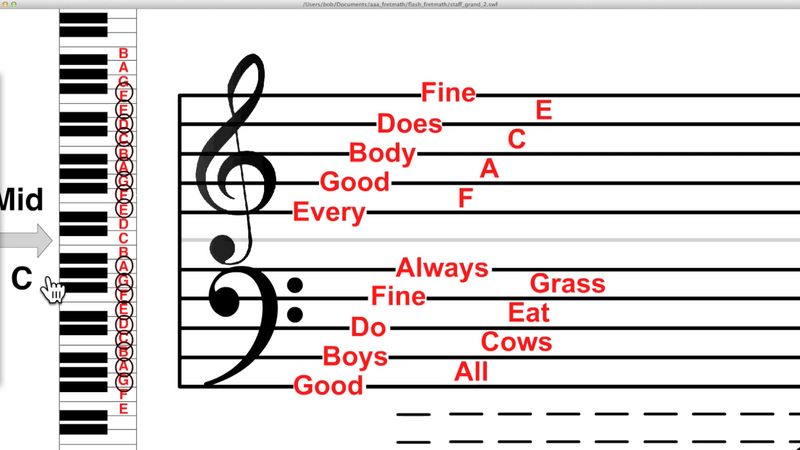

Join me as we embark on a musical adventure! Today we are going to learn how to read the Grand Staff.
There are two clefs, the Trebel (on the top in Fig.1), and the Bass (on the bottom in Fig.1). The clefs determine which notes go on which lines and spaces.
Below are some explanations and examples of how to read the Grand Staff in each clef:
Visual of the Grand Staff

Fig.1 - The Grand Staff and it's relation to the keys on a piano.
How to Read the Grand Staff (Audio)
Fig.2 - An audio description of how to read the Grand Staff.